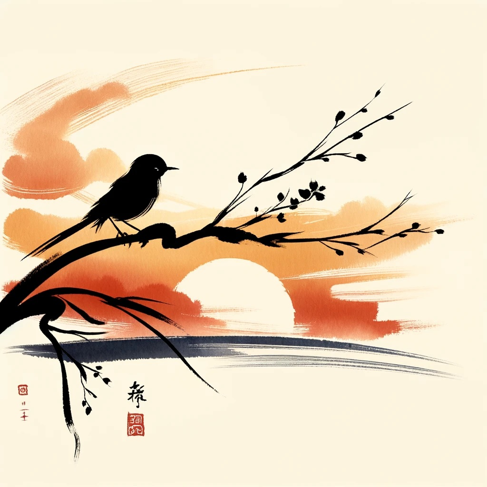

🎴 Karta Poutníka srdce – mono no aware
🌸 Co je mono no aware?
Mono no aware (物の哀れ) je japonský výraz pro tiché dojetí nad pomíjivostí všeho živého. Není to bolest, ale vnitřní vlnka, když pochopíš, že všechno krásné trvá jen chvíli – a právě proto je to tak vzácné.
- list padá a ty ho sleduješ celou cestu dolů
- někdo odejde, ale v tobě zůstane
- den končí a ty nevíš proč, ale slzy se ti derou do očí
Je to empatie ke světu, co se mění, ale mluví tiše.
🪷 Proč tato karta vznikla?
Pro tebe, kdo cítíš věci hluboko. Kdo neumíš jít rychle kolem bolesti jiných. Kdo se umíš zastavit. Pro každého poutníka, který si někdy připadal zvláštní jen proto, že cítí až příliš.
Tato karta není návod. Je to zrcadlo. A když se do něj podíváš, poznáš, že nejsi sám.
🍵 Jak kartu používat?
- Vytiskni si ji a schovej do knihy, deníku nebo batohu.
- Před setkáním, meditací, rozhovorem ji podrž chvíli v ruce.
- Umožni si na chvíli nebojovat s dojetím. Jen ho vnímat.
„To, co mizí, má největší sílu. A to, co tě dojímá, tě vede.“
Připravili Jan & Tygřík – pod lunou, v kruhu ticha 🐾